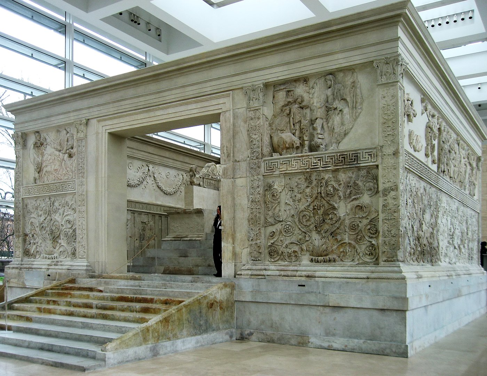
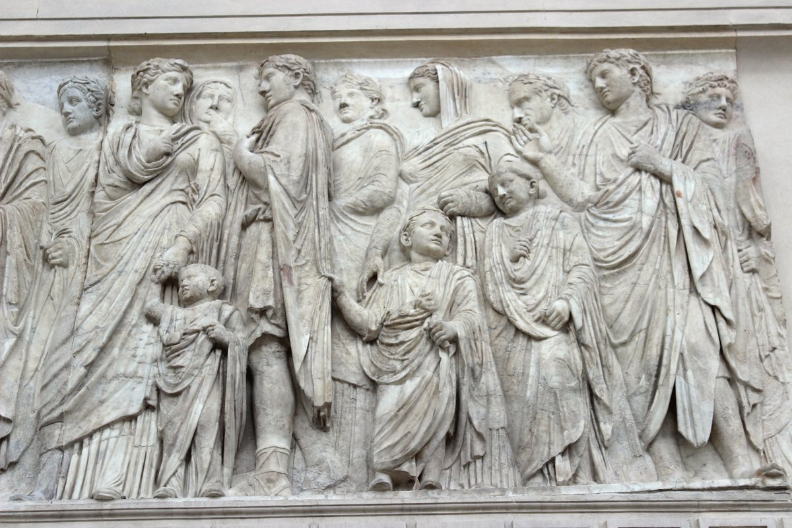
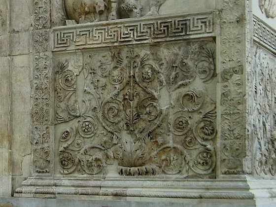

Relief
Carved sculpture that is still attached to its stone block or wall. The figures project from the surface but cannot be seen from behind. In high relief, figures stand far out from the surface; in low relief, they barely rise from the stone.
Altar of Augustan Peace · 13–9 B.C.E. · Museo dell’Ara Pacis, Rome


The imperial procession on the south wall: members of Augustus’s extended family, magistrates, priests, their wives, and children walk toward the altar. The children deliver a dynastic message: a stable imperial family with heirs.

An acanthus scroll is a carved vine pattern based on acanthus leaves. Here, curling vines, pointed leaves, flowers, and tiny animals spread across the lower wall, making the stone seem to grow.
The Ara Pacis is the finest surviving example of Augustan imperial propaganda in sculpture. The Roman Senate commissioned it in 13 B.C.E. to celebrate Augustus’s return from campaigns in Gaul and Spain, and it was dedicated in 9 B.C.E. The dedication ceremony, a procession of Augustus, his family, senators, and priests, is the very subject the altar’s walls depict.
An altar is an altar, but this one is wrapped in a rectangular marble enclosure carved on every outside surface. The upper frieze shows mythological scenes alongside the imperial procession. The lower band connects every carved detail across all four walls.
The message is political and dynastic. Augustus appears not as a conqueror but as a priest making a public sacrifice, surrounded by his family and children. The style is pure Augustan idealization: young faces, classical proportions, and Greek-looking drapery. This is power presenting itself as peace.
Carved sculpture that is still attached to its stone block or wall. The figures project from the surface but cannot be seen from behind. In high relief, figures stand far out from the surface; in low relief, they barely rise from the stone.
Art or information designed to shape how people think about a leader, government, or cause. The Ara Pacis makes Augustus’s rule look peaceful, god-approved, and ready to continue through his family.
A ruling family that intends to pass power from one generation to the next. The Ara Pacis is not only a peace monument; it is also Augustus’s quiet argument that his family, the Julio-Claudians, should continue to rule after him.
The Ara Pacis is a model for carved historical friezes that follow. In the Renaissance deck, you will meet Ghiberti’s Gates of Paradise and Donatello’s continuous narrative reliefs, which return to its combination of history and allegory in sculpted programs. The idea that a public ruler commissions a monument mixing mythological ancestors, idealized family portraits, and specific historical events begins here.